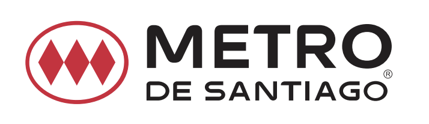
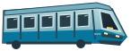

TRIVIA PARA RELATORES
CAPACITACIÓN INTERNA
LÍNEA 1
L1
PONIENTE
⟶
ORIENTE
En el punto de partida · 0 de 10

● Estación actual
✓ Completada
◆ Estación segura: Universidad de Santiago
Activa JavaScript para jugar.